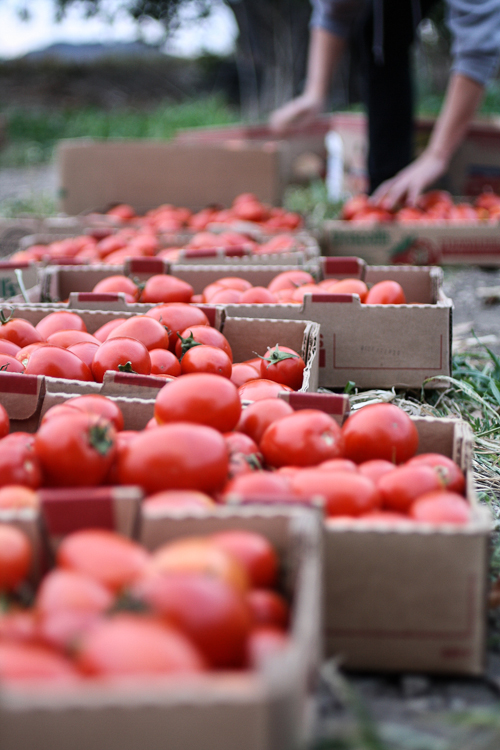
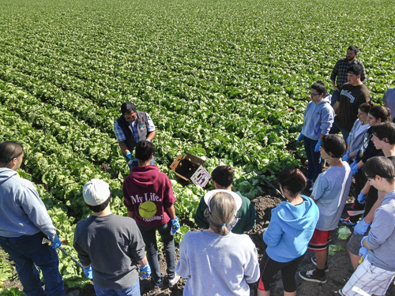
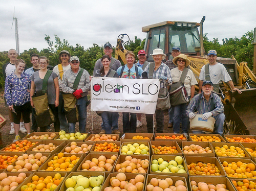

GleanSLO is grateful to the following businesses and organizations for their financial support:




Avalon Foundation - Templeton
Aviation Consultants Inc.
Templeton Bethel Evangelical Lutheran Church
California Fresh Markets
Dimes Media
Darden Restaurants, Inc. Foundation
Enviro Management Inc.
Etna Interactive
Exxon Mobil Foundation
Gerber's Auto Services
Niner Wine Estates
ORCA Free Inc.
Promega Bio Sciences, LLC
Rabobank, N. A.
San Luis Obispo Newcomers
San Luis Obispo Seventh Day Adventist Church
San Luis Obispo United Methodist Church
Specialty Construction, Inc.
Umpqua Bank
Unitarian Universalist Fellowship of SLO County
Wine Waves and Beyond
Special thanks to our generous farmers, growers and donors!
2016 Donors:
Adele Anderson
Antoon Family
Avila & Sons Farms
Baker Family
Georgia Barr
Jamie Basinger
Bautista Farms
Becker Family
Bejo Seeds
Bellevue-Santa Fe Charter School
Beltran Family
Bishop's Peak Elementary
Branch Mill Organic Farm
Brauninger Family
Bryant Family
Cal Poly Horticulture & Crops Science Unit
Cal Poly Organic Farm
Marge & Roger Castle
Marna Christopher
Cirone Family
City Farm-Central Coast Grown
Collins Family
David and Peggy Coon
Lynne Cornell
Cortez Farms
Crowfoot Family
Cundiff Family
Dalessio Family
Dana Creek Homeowners Association
Ron and Louise Dawson
Dente Family
Detz Family
Paulette Diaz
Joel Diringer
Jason Dornish
Dragon Springs Farm
Duncan Family Farms
Nancy and Tom Dwyer
Creekside Avocados
Chumash Village Mobile Home Park
Evenson Family
Gary Faucette
Firstfruits Farm
Kathy Foster
Four Seasons Harvesting Inc.
Pete Freitas
Burt Fugate
Larry Gabrisch
Greenbase Antiques
Gulino Family
Harlow Family Orchard
The Hasson Family
Hearst Castle
Leah Hencier
Lupe Hernandez
Bill Hidgon
Norma Hoffman
Simon Holland
Horwitz Family
Hunt Family Farms
Ikeda Brothers
Island Farms
Douglas and Deborah Johnson
Liz Johnston
Susan Jonas
Kapana Farms
Kinney Family
Sarah Krueckel
Katie Krupp
L & C Smith Groves
CA Natural Sweet Corn
Marsha Lucero
Trenton Luis
Andrew Lunny
Madansky Family
Linda Mahnken
Mallard Lake Ranch
Adam Dale
Master Gardeners Demo Garden
McCall Farm
Rob Mcdonald
Bridget Mcgovern
Milburn Family
Moran Family
Linda Mulvey
Munak Ranch
Pat and Tom Muran
Merri Nagano
Nichols Family
Norris Family
Our Global Family Farm
Terry Parry
Rosalyn Parsons
Pechmann family
Scott & Susan Pigeon
The Plakias Family
Rancho San Miguel Hills
Ruth Reasor
Red Barn Farms
Brenda Reynolds
RobinSong Farms
Steve & Mary Lou Ross
Lauren Rueda and Reese Galido
Rutiz Farms
Jackie Santoro
Peggy Sharpe
Kathy Sherman
Donna Silva
SLO Creek Farms
Thursday SLO Farmers Market
SLO Veg
Jacqueline and Michael Solomon
Stanier Family
Jiordana Stark
Bernard & Joan Suttle
Robert and Vicki Swett
Talley Farms
Saturday Templeton Farmers Market
Stephanie Ricceri - Tierra Nueva Cohousing Homeowners Association
The Tomsens
Trabia Farms
Darlene Tunney Rosene
Keith Silva
Wagner Family
Mary Wainscott
Ken & Ebbie Ward
Doug Wiggin
Frankie Williams
Sally Woelper
Wolff Vineyards
These donors make GleanSLO’s work possible! You can use your purchasing power to show your support! An up-to-date monthly list of donating growers is included in our monthly newsletter.
If you have made a donation and would like to be added this list, please contact Program Manager, Roxanne Sanders at 805-835-3750 or gleanslo@slofoodbank.org